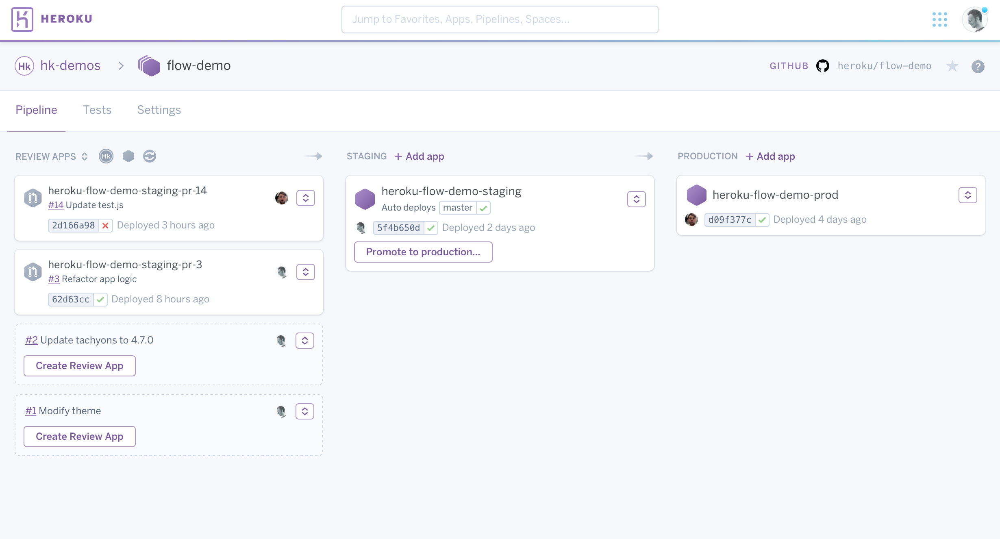
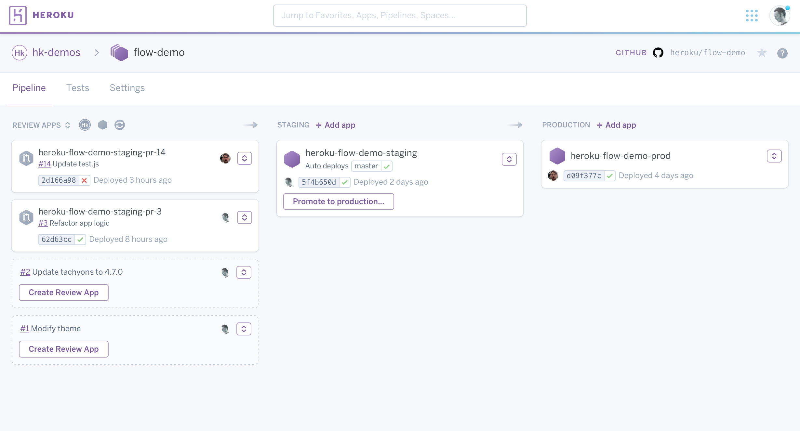
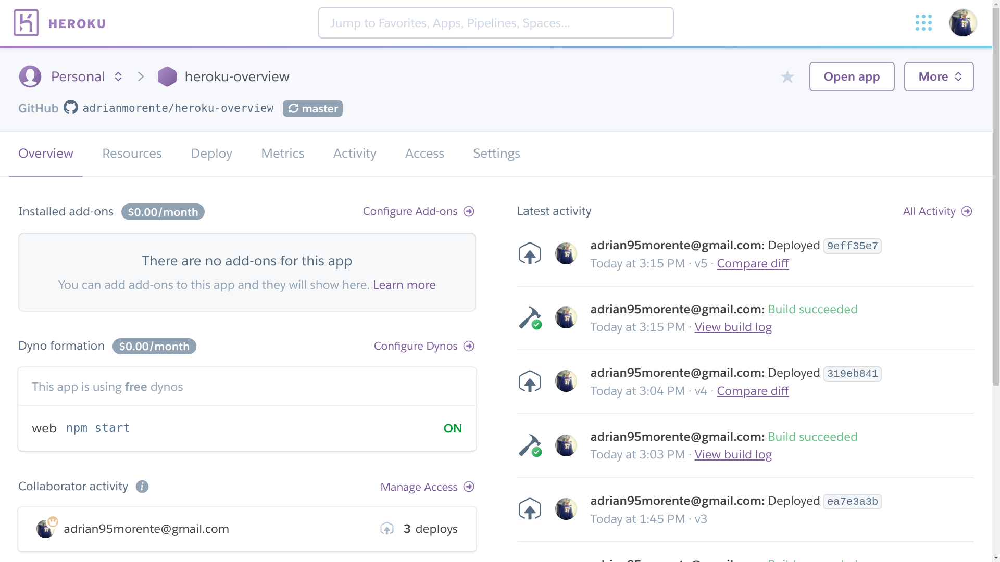
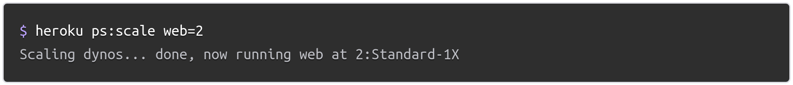
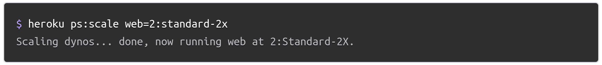

Cloud Computing
Servicios incluidos en PaaS: Heroku

Adrián Morente Gabaldón
- Plataforma cloud para construir, desplegar, monitorizar y desplegar aplicaciones.
- Planes Dynos de distinto volumen (y precio).
- Herramientas GUI y CLI para desarrollo y gestión.
- Soporte para equipos y empresas.
Experiencia del desarrollador (DX)

Experiencia del desarrollador (DX)

Experiencia del desarrollador (DX)

Experiencia del desarrollador (DX)

Experiencia del desarrollador (DX)

Experiencia del desarrollador (DX)

Servicios incluidos
- Desarrollo de aplicaciones
- Colaboración
- Manejo de datos
- Instrumentación, prestaciones y pruebas
- Almacenamiento
- Gestión de transacciones

Desarrollo de aplicaciones
- Guía rápida para distintos lenguajes (usa Procfile).
- Integración continua y despliegue automático desde CLI o Git.
- Despliegue con imágenes de Docker (propias o de
Container Registry.
-
Instrumentación con add-ons.
 

- Proyecto simple: permisos de acceso.
- Equipos: gratis (<5 miembros), de pago (6-25 miembros, 10$/mes).
- Enterprise: equipos más grandes, con roles, espacios privados, etc.
En equipos, los dynos gratuitos no están disponibles, solo las instancias de pago.

Manejo de datos
- Heroku Postgres: servicio DDBB relacional (SQL).
- Heroku Redis: almacén clave-valor (in-memory).
- Apache Kafka on Heroku: envío de mensajes en "tiempo real". Patrón Pub/Sub.
Servicios ajenos a Heroku pero provistos de forma cómoda al desarrollador.
Monitorización
El dashboard permite supervisar y gestionar los distintos servicios.

Prestaciones
Heroku permite distintos tipos de ajuste del rendimiento necesario:
- Escalado (manual o automático).
- HTTP caching (a través de CDN).
- Workers y trabajo en segundo plano.
Escalado manual (CLI o GUI)
Escalado horizontal

Escalado vertical

Escalado automático disponible para Performance-tier.